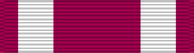

DecorationMSM
For outstanding noncombat achievement or meritorious service to the United States.
Check your eligibility and build your ribbon rackA decoration must be officially awarded. Meeting the standard isn't enough: someone has to recommend you and the approval authority has to sign off. The citation and special order are your proof.
Approval: Approved at the level set in DAFMAN 36-2806, Military Awards: Criteria and Procedures.
This decoration was established by Executive Order 11448 on Jan. 16, 1969. This award was established as the counterpart of the Bronze Star Medal for the recognition of meritorious noncombatant service.
The Meritorious Service Medal may be awarded to any member of the armed forces of the United States who distinguishes themselves by either outstanding achievement or meritorious service to the United States.
The medal was designed by Jay Morris and sculptured by Lewis J. King, Jr., both of the Army's Institute of Heraldry. It is a one and one-half inch medallion in bronze, on the obverse as eagle wings upraised, standing upon two upward curving branches of laurel tied with a ribbon between the talons of the eagle, above and behind the eagle the upper part of a five-pointed star (with two smaller stars outlined within) on a incised plaque with six points starting at the top of each wing of the eagle. The reverse is plain with a circular inscription in raised letters, United States of America and Meritorious Service separated by dots.
The ribbon is purplish red with a quarter inch white stripe one-eighth inch from each edge.
Oak Leaf Cluster and Remote “R” Device
The "R" device was established to distinguish an award earned for direct hands-on employment of a weapon system that had a direct and immediate impact on a combat operation or other military operation (i.e. outcome of an engagement or specific effects on a target). Other military operations include Title 10, United States Code, support of non-Title 10 operations, and operations authorized by an approved execute order.
The action must have been performed through any domain and in circumstances that did not expose the individual to personal hostile action, or place him or her at significant risk of personal exposure to hostile action:
Qualifying Career Fields
The "R" device may be awarded to Airmen who, during the period of the act, served in the remotely piloted aircraft; cyber; space; or Intelligence, Surveillance, and Reconnaissance career fields on or after Jan. 7, 2016 (this is not retroactive prior to this date).
Basis for a Decoration
Source: Meritorious Service Medal fact sheet, Air Force's Personnel Center